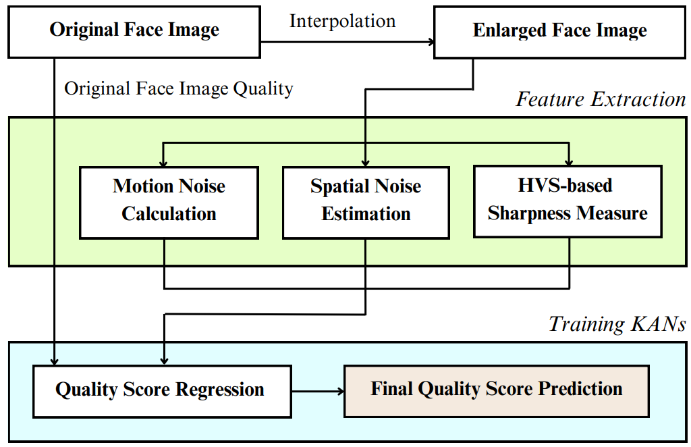
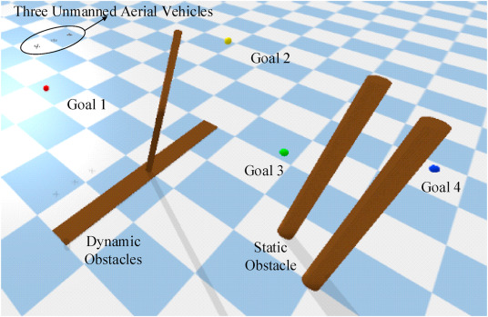
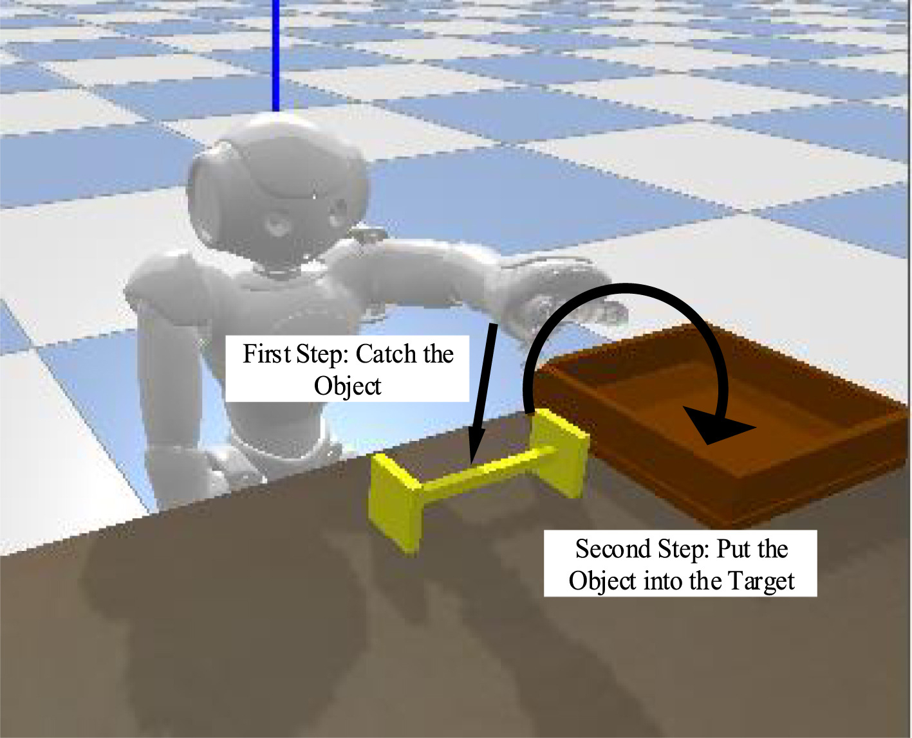
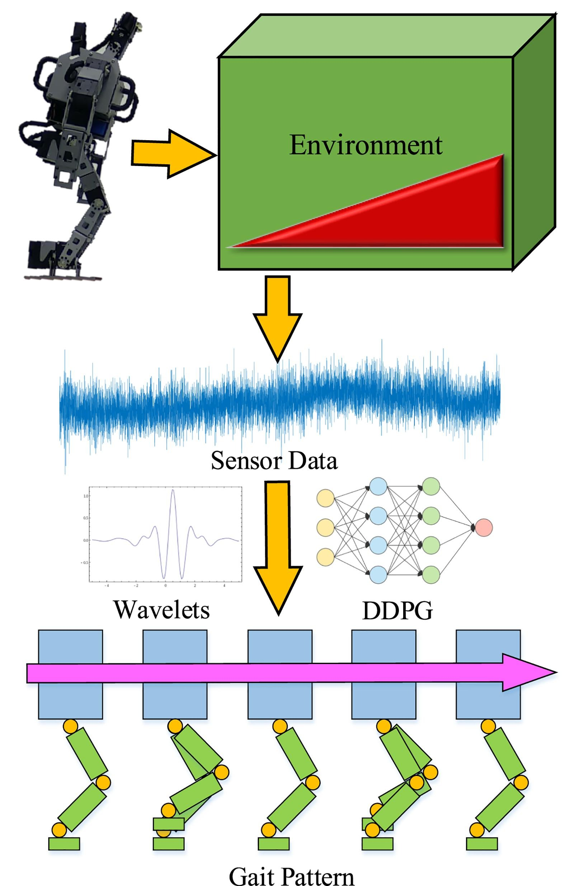
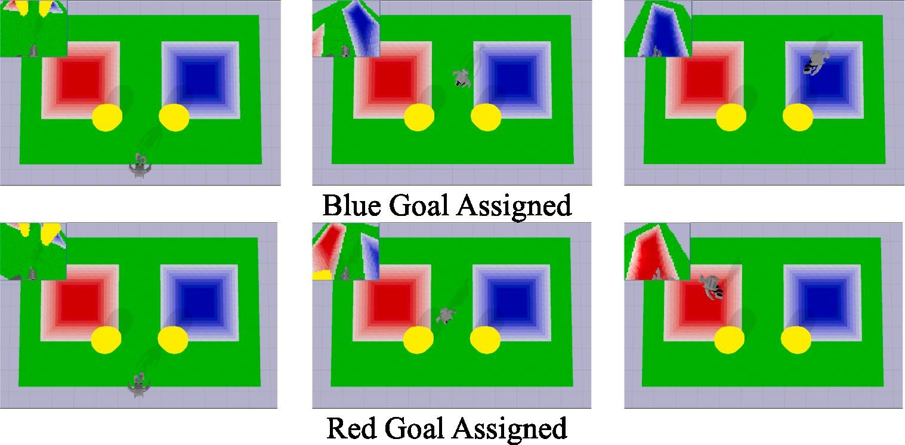

Research
H-index: 4 | i10-index: 1
Guitar Tone Morphing by Diffusion-based Model
Kuan-Yu Chen, Kuan-Lin Chen, Yu-Chieh Yu, Jian-Jiun Ding
APSIPA ASC, 2025
We compare three latent-diffusion approaches (with single- and dual-sided LoRA) against a non-diffusion baseline that performs spherical interpolation in Music2Latent.
Experiments show that Music2Latent achieves the best perceptual quality (MOS 4.3 / 5.0) and produces smoother, more natural tone transitions.

FRIEREN: Face Resizing Image Quality Evaluation via Robust Estimation of Image Naturalness
Yuan-Kang Lee, Kuan-Lin Chen, Jian-Jiun Ding
APCCAS, 2025
In practice, enlarging faces via nearest, bilinear, bicubic, or Lanczos interpolation introduces high-frequency artifacts that many NR-IQA methods misread as sharpness.
FRIEREN estimates motion noise from a single frame, DWT-based spatial noise, and an HVS-aligned sharpness measure, then regresses quality via KANs;
it better matches human preference (Lanczos > Bicubic > Bilinear > Nearest) and outperforms SOTA on MS1MV2 (PLCC 0.8954 / SROCC 0.8723).

Deep reinforcement learning–based collision avoidance strategy for multiple unmanned aerial vehicles
Ping-Huan Kuo, Kuan-Lin Chen, Yu-Sian Lin, Yu-Chih Chiu, Chao-Chung Peng
Engineering Applications of Artificial Intelligence (EAAI), 2025
We propose a two-stage training pipeline for multi-UAV collision avoidance: a self-designed reward first teaches a single UAV to traverse multiple goals while avoiding dynamic/static obstacles,
then second-stage training enable three UAVs to complete the task while maintaining safe separation; A2C and PPO converge reliably, whereas SAC largely fails.
Developmental Prediction of Poststroke Patients in Activities of Daily Living by Using Tree-Structured Parzen Estimator–Optimized Stacking Ensemble Approaches
Pei-Hua Lin, Ping-Huan Kuo, Kuan-Lin Chen
IEEE Journal of Biomedical and Health Informatics (JBHI), 2024
We predict discharge Barthel Index for stroke inpatients using a TPE-optimized stacking ensemble (RF+AdaBoost+MLP), achieving R²=0.5453, MAE=12.797,
and RMSE=16.182 on 878 cases, with admission BI identified as the most critical feature.
Optical Based Gradient-Weighted Class Activation Mapping and Transfer Learning Integrated Pneumonia Prediction Model
Chia-Wei Jan, Yu-Jhih Chiu, Kuan-Lin Chen, Ting-Chun Yao, Ping-Huan Kuo
Computer Systems Science and Engineering (CSSE), 2024
We introduce GCPNet, a chest X-ray pneumonia aid that fuses transfer learning with Grad-CAM–guided re-training—up-weighting samples whose attention drifts off-center—and,
with augmentation, reaches 97.2% accuracy with interpretable heatmaps.

Two-stage fuzzy object grasping controller for a humanoid robot with proximal policy optimization
Ping-Huan Kuo, Kuan-Lin Chen
Engineering Applications of Artificial Intelligence (EAAI), 2023
We present a two-stage PPO + fuzzy-logic pipeline that teaches the NAO humanoid to first grasp and then place objects,
with ABC-based parameter optimization delivering faster convergence and higher success in simulation robot.

Sequential sensor fusion-based W-DDPG gait controller of bipedal robots for adaptive slope walking
Ping-Huan Kuo, Jun Hu, Kuan-Lin Chen, Wei-Hsin Chang, Xin-Yu Chen, Chiou-Jye Huang
Advanced Engineering Informatics (AEI), 2023
We perform 2-level wavelet decomposition on 6-DoF IMU sequences and feed them to W-DDPG to adapt 15 CPG gait parameters for uphill/downhill walking.
Compared with strong baselines and network variants, the approach is more stable, with the LSTM+wavelet variant achieving the lowest IMU and trajectory MAEs;
real-robot tests on an OP3 at ±2.1° and ±4.7° confirm feasibility.

Intelligent proximal-policy-optimization-based decision-making system for humanoid robots
Ping-Huan Kuo, Wei-Cyuan Yang, Po-Wei Hsu, Kuan-Lin Chen
Advanced Engineering Informatics (AEI), 2023
We couple an InfoGAN gait generator with a PPO-based decision maker so a humanoid can perceive its scene and autonomously select left/forward/right gaits;
the approach outperforms TRPO, TD3, and A2C and is validated in simulation and on real robots (OP3 with obstacle avoidance; NAO for pick-and-place).